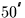
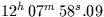
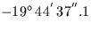
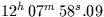
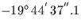

Next: Epoch
Up: EXPLANATION AND EXAMPLES
Previous: SLALIB support for precession and nutation
The main effect of the precession/nutation is a steady increase of about
/year in the ecliptic longitudes of the stars. It is therefore
essential, when reporting the position of an astronomical target, to
qualify the coordinates with a date, or epoch.
Specifying the epoch ties down the equator and
equinox which define the ![$[\,\alpha,\delta\,]$](img3.gif) coordinate system that is
being used.
coordinate system that is
being used.
![[*]](foot_motif.gif) For simplicity, only
the smooth and steady ``general
precession'' part of the complete precession/nutation effect is
included, thereby defining what is called the mean
equator and equinox for the epoch concerned. We say a star
has a mean place of (for example)
  ``with respect to the mean equator
and equinox of epoch J2000''. The short way of saying
this is `` equinox J2000'' (not `` epoch J2000'',
which means something different to do with
proper motion).
For simplicity, only
the smooth and steady ``general
precession'' part of the complete precession/nutation effect is
included, thereby defining what is called the mean
equator and equinox for the epoch concerned. We say a star
has a mean place of (for example)
  ``with respect to the mean equator
and equinox of epoch J2000''. The short way of saying
this is `` equinox J2000'' (not `` epoch J2000'',
which means something different to do with
proper motion).
Next: Epoch
Up: EXPLANATION AND EXAMPLES
Previous: SLALIB support for precession and nutation
SLALIB --- Positional Astronomy Library
Starlink User Note 67
P. T. Wallace
12 October 1999
E-mail:ptw@star.rl.ac.uk